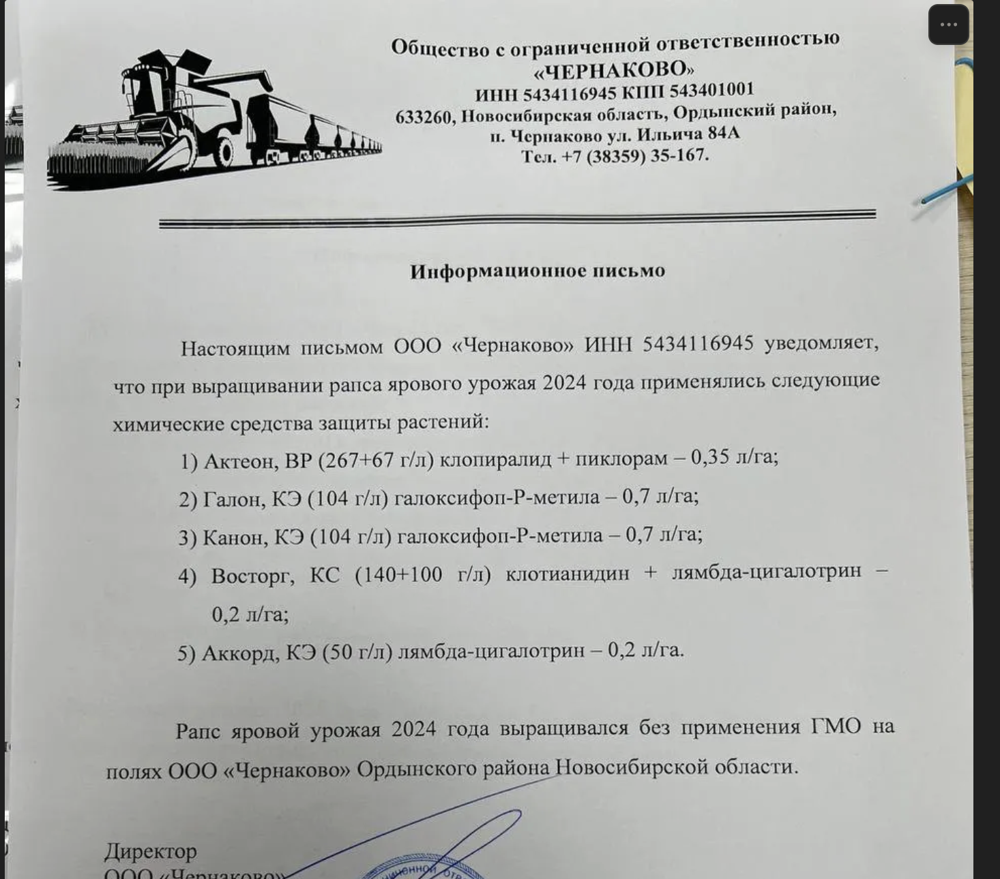
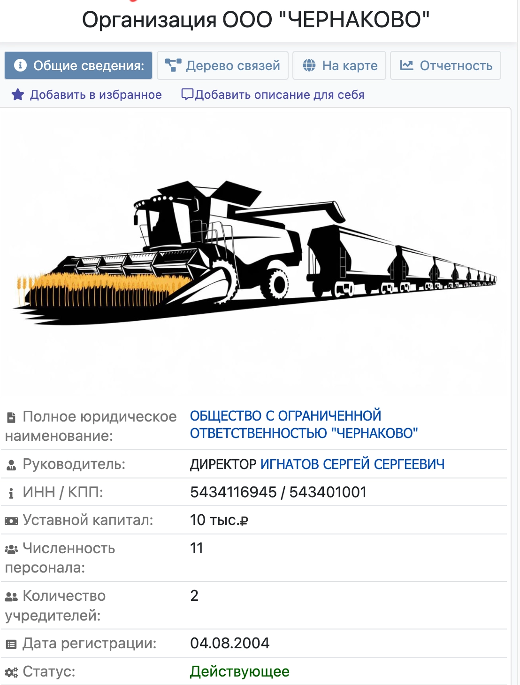
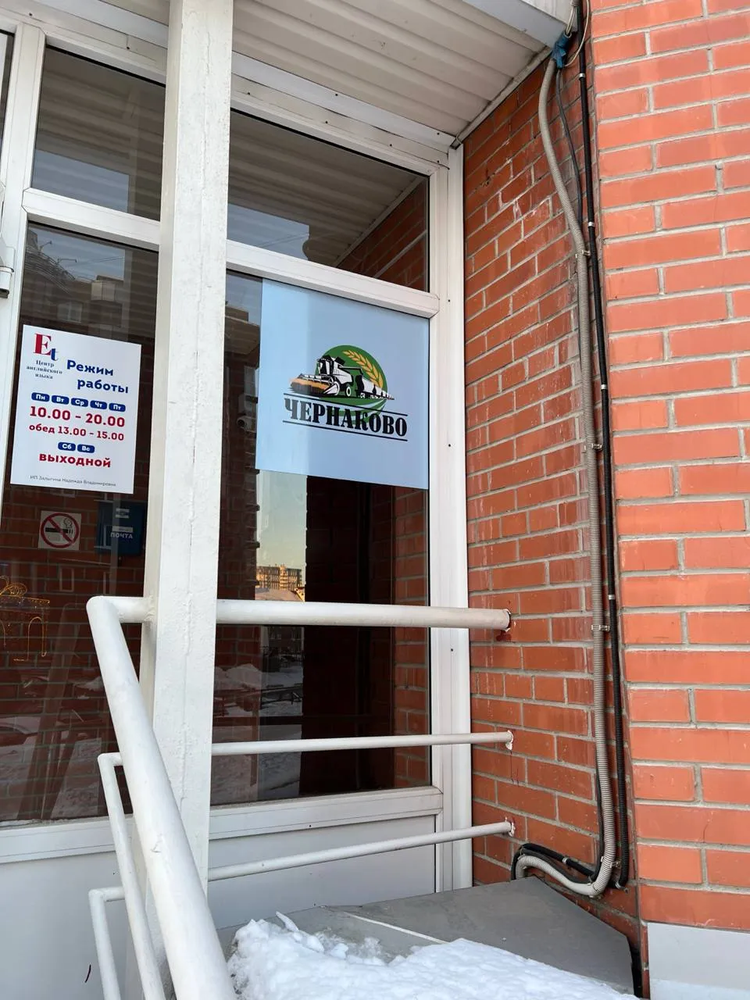
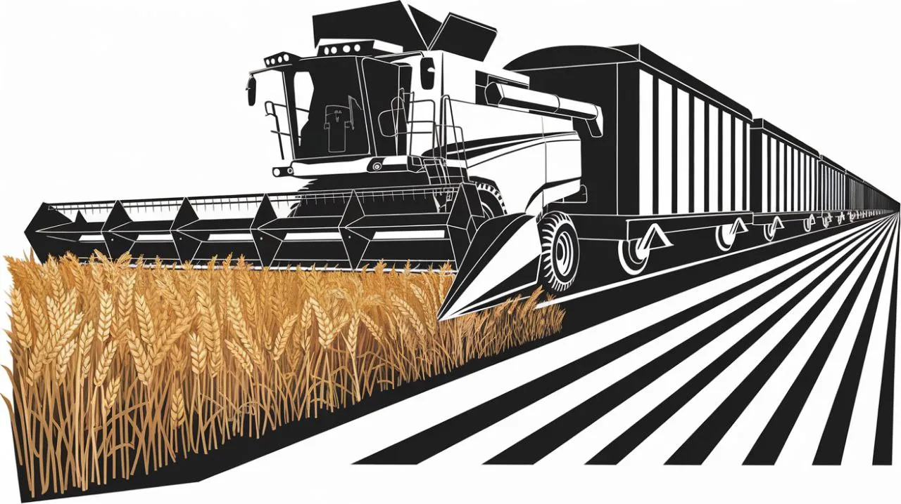
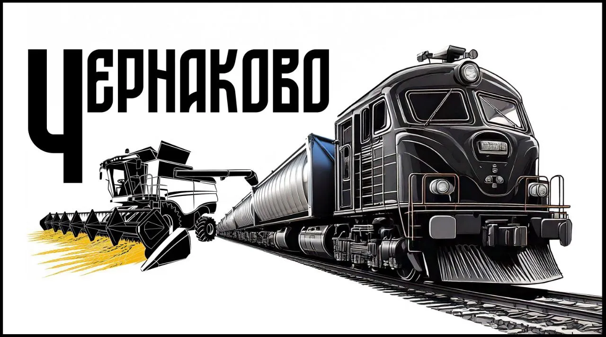

Final logo
Master mark · Wheat harvester & traincar
Train company · Siberia · 2024
Railroads & Russia · Letterheads & shipping labels
This design was made for a train company based in Siberia. The client wanted to use it for letterheads and shipping labels. The logo was meant to be minimalist and depict a wheat harvester feeding into a traincar. After several edits and iterations, a final design was accepted and is widely used in the industry for internal documents as the birth of their brand takes off.
Master mark · Wheat harvester & traincar

This screenshot shows an Information Letter (Информационное письмо) issued by LLC "Chernakovo", an agricultural enterprise based in the Novosibirsk region.
Purpose: The letter serves as a formal notification regarding the specific plant protection products (pesticides and herbicides) used during the cultivation of their 2024 spring rapeseed crop.
Key contents: Chemical transparency—it lists five specific chemical treatments (such as "Acteon" and "Galon") along with their precise application dosages per hectare. Non-GMO certification: the letter explicitly declares that the 2024 crop was grown without the use of GMOs on their fields in the Ordynsky district.
Context: This type of documentation is typically required for supply chain compliance, ensuring that food processors or exporters have a verified record of the crop's chemical history and non-GMO status.

This screenshot is from a Russian business directory for LLC "Chernakovo" (the same agricultural company from the official letter). While the previous image was a formal document, this is the "public record" view of the entity.
Company status: Listed as "Active" (Действующее). Corporate identity: The profile features the same combine harvester illustration used on their official letterhead, maintaining consistent branding across physical and digital presence.
Key data: Managed by Director Sergey Sergeevich Ignatov. The company has been registered since August 4, 2004 (over two decades). Small-scale enterprise with 11 employees and two founders.
Context: This interface is typical for platforms like Sbis or Rusprofile, used for due diligence to check if a business is legitimate before signing contracts.

Logo in office entrance window · Siberia, Russia · Client added color to background
Not chosen for the final design.

